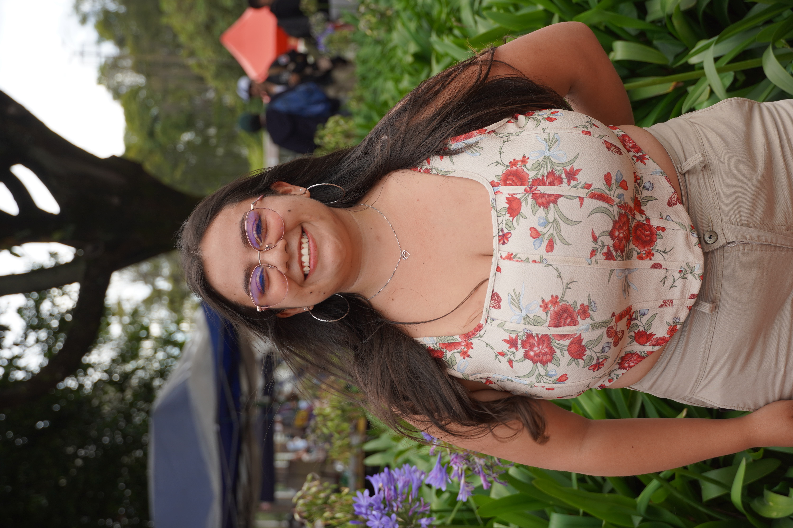
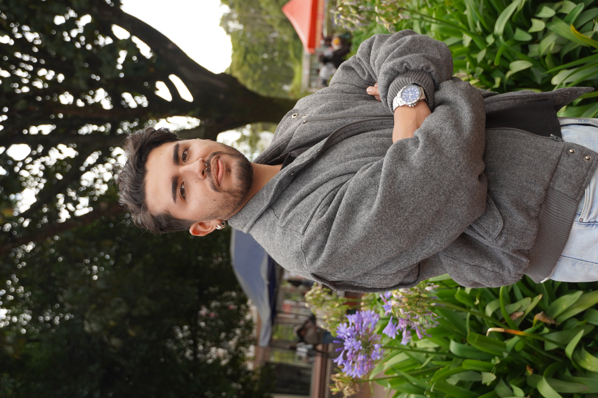
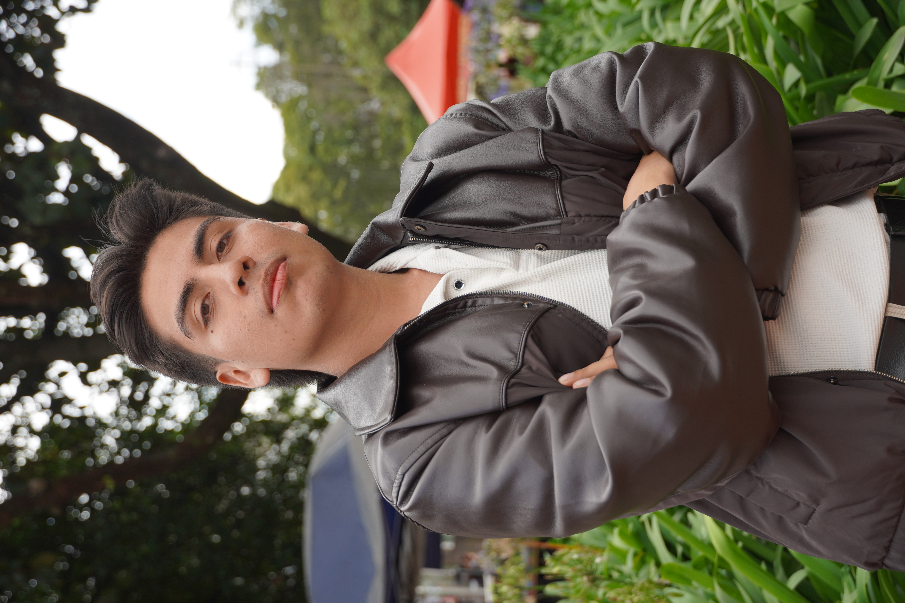
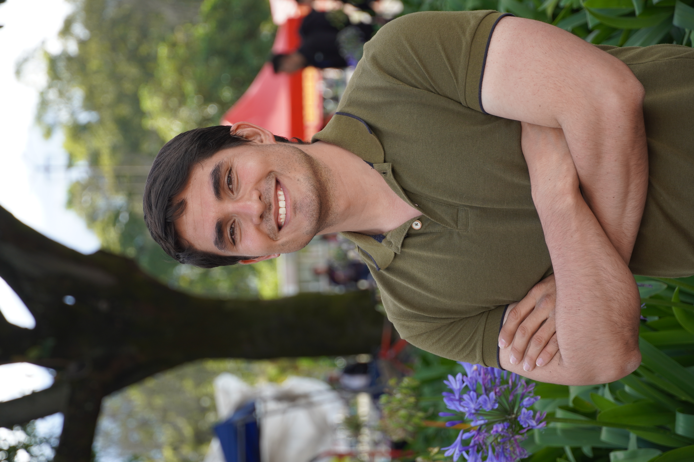
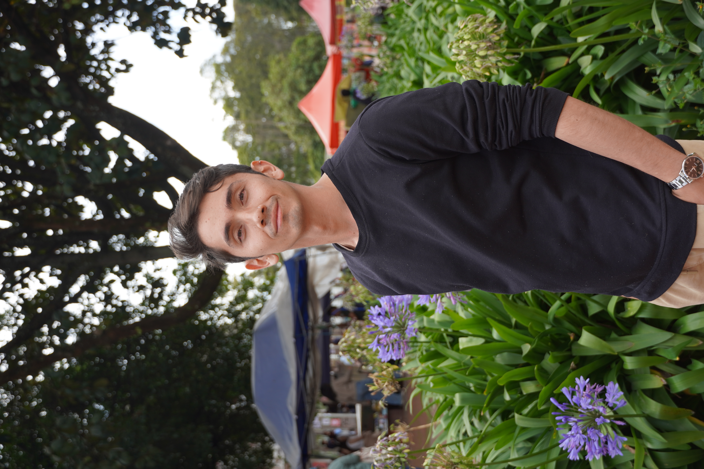
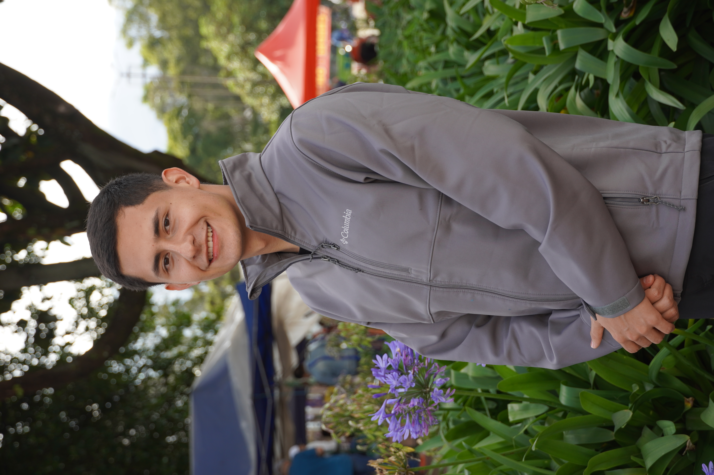
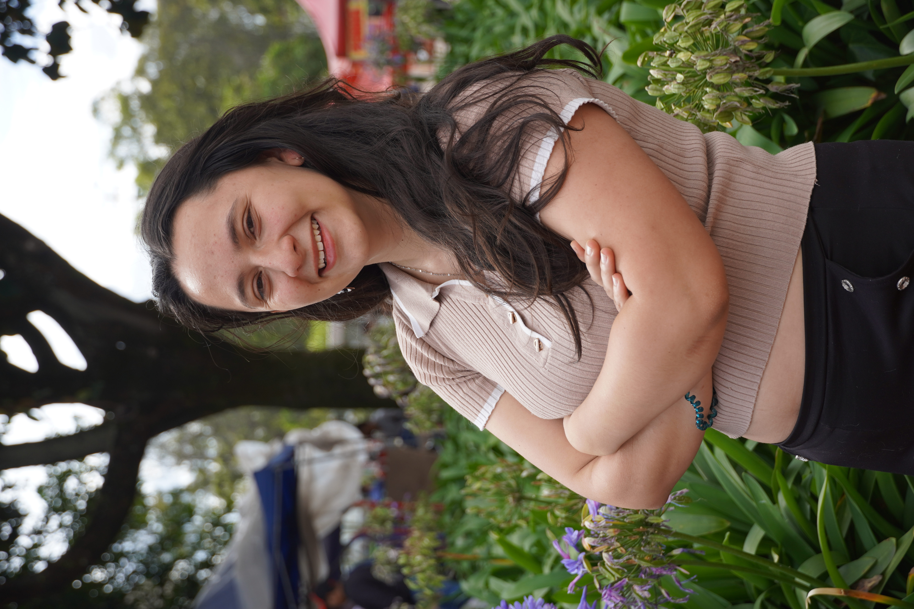

Entre realidades y paradigmas
Resultados de la encuesta de expectativa hacia el egreso. Contextualización y metodología.
Una encuesta hecha por estudiantes, para estudiantes
Buscamos escuchar las voces de quienes están a punto de dar el salto al mundo profesional. Esta encuesta fue diseñada para describir las intenciones, motivaciones, desafíos percibidos y preocupaciones de los estudiantes de pregrado de la Sede Bogotá, con edades entre 18 y 28 años y un avance de carrera superior al 70%.
¿Cómo llegamos hasta aquí?
El proceso detrás de la recolección de datos
1. Reconocimiento de necesidades
Todo comenzó identificando asimetrías: mientras en Ciencias Humanas preocupaba un mercado saturado, en Artes se apuntaba al emprendimiento. Pese a las normativas, no existían mediciones concretas sobre los temores y retos que sentían los estudiantes frente al egreso.
2. Construcción del instrumento
Tras revisiones conceptuales y pruebas piloto, consolidamos una encuesta dinámica de 45 preguntas. Dependiendo de los planes del estudiante a corto plazo, la encuesta se dividió en tres grandes trayectorias: Empleabilidad (13 preguntas), Emprendimiento (18 preguntas) y Desarrollo del Conocimiento (9 preguntas).
3. Muestreo y recolección de voces
Aplicamos un muestreo probabilístico estratificado por facultades. Mediante envíos masivos de correos institucionales, invitamos a los estudiantes seleccionados a contar su perspectiva, logrando recoger las expectativas de cientos de jóvenes de la Sede Bogotá.
4. Nacimiento del LEPP
Para analizar y divulgar todos estos hallazgos, el equipo de estudiantes creó el Laboratorio Estudiantil de Proyección Profesional (LEPP), consolidando este esfuerzo en una estrategia institucional de monitoreo constante.
El alcance del estudio en cifras
Población Objetivo
5.716
Estudiantes Sede Bogotá
Muestra Teórica
3.002
Muestreo Estratificado
Respuestas
522
Participantes finales
Tasa de Respuesta
17.3%
Margen error: ±4.1%
Informes Completos
Cada semana publicaremos análisis detallados y desafíos percibidos. No te pierdas el análisis completo en PDF.
Informe #01: Contextualización y metodología
Detrás de los resultados: cómo construimos la encuesta de perceción ante el egreso
DESCARGAR PDFContexto y caracterización de las trayectorias de egreso
El tránsito de la vida universitaria al entorno profesional representa una de las situaciones más complejas, desafiantes y determinantes en la vida de cualquier estudiante. Lejos de ser un proceso lineal o uniforme, el egreso actual se caracteriza por la multiplicidad de caminos disponibles. Hoy en día, los futuros profesionales no se enfrentan a un destino único, sino a una diversidad de elecciones donde convergen expectativas personales, realidades socioeconómicas y transformaciones globales.
Para el Laboratorio Estudiantil de Proyección Profesional (LEPP), es fundamental entender que las decisiones de los estudiantes no ocurren en el vacío. Antes de describir las intenciones de egreso en una muestra aleatoria de 522 estudiantes (2025-1), se hace imprescindible contextualizar las dinámicas externas que configuran las realidades del mercado laboral, el emprendimiento y el desarrollo del conocimiento.
¿Qué encuentran los jóvenes al ingresar al mercado laboral?
Mercado laboral juvenil en Colombia (Trimestre Jun-Ago 2025)
De jóvenes entre 15 y 28 años en edad de trabajar. El 55% conforma la fuerza de trabajo activa.
Equivalente a cerca de 5,2 millones de jóvenes con empleo, frente a un 14,8% de desocupados.
Cerca de 2,38 millones no estudian ni trabajan. De este grupo, un alarmante 67,5% corresponde a mujeres.
Flujo del Mercado Laboral Juvenil
Trimestre Móvil Junio - Agosto 2025
Este diagrama de flujo representa proporcionalmente la distribución macro de los 11,1 millones de jóvenes en edad de trabajar en Colombia.
Permite visibilizar con precisión matemática la transición de la población hacia la fuerza laboral activa (ocupados y desocupados) y aquellos subgrupos que se encuentran fuera de ella, como los denominados NINIs (2,38 M).
Emprender en Colombia: ¿Oportunidad o desafío?
En Colombia, la evidencia del GEM (2023-2024) apunta de manera consistente a una conclusión: la necesidad pesa más que la oportunidad. Sobrevivir ante la escasez de empleo es la motivación predominante, lo que explica que los emprendimientos respondan más a una lógica de subsistencia.
El panorama reciente es adverso: la tasa de actividad empresarial temprana cayó al 23,5 %, y la tasa de empresarios establecidos es de apenas 3,4 % (muy por debajo de Ecuador, Guatemala o Brasil). Además, la enorme mayoría concentra a sus clientes en el país, mostrando que el emprendimiento colombiano sigue orientado al mercado interno.
La ruta del conocimiento
La continuidad académica ha mostrado un crecimiento sostenido. En 2024, la matrícula en educación superior alcanzó 2.553.560 estudiantes. El nivel de posgrado presentó la variación más significativa (+6,1%) frente a 2023, superando el ritmo de expansión del pregrado (+2,9%).
Esto evidencia que la formación avanzada está ganando dinamismo, sugiriendo que un segmento relevante opta por prolongar su formación antes o después de insertarse en el mercado. La tasa de cobertura bruta también subió al 57,53%, aunque persisten diferencias regionales derivadas de la concentración de la oferta educativa.
Resultados de la Encuesta unLEMA
¿Qué esperan los estudiantes después de graduarse? A partir de la encuesta aplicada a 522 estudiantes, el LEPP presenta la distribución descriptiva de las decisiones frente al egreso.
Elección de las trayectorias después del egreso
El Panorama por Facultades
C. Agrarias (84.6%) y Odontología (78.6%) registran la mayor proporción de elección hacia el mercado laboral.
La Facultad de Ciencias (54.2%) es la única con una mayoría de encuestados orientados a continuar su formación.
Med. Veterinaria (22.2%) y Artes (12.5%) presentan los mayores porcentajes de intención de emprender.
Más allá del promedio general
Al desagregar los datos generales, se observan variaciones descriptivas importantes dependiendo de las características poblacionales de los encuestados.
Identidad de Género
Se evidenció que los hombres muestran el doble de propensión hacia el emprendimiento (6,5%) en comparación con las mujeres (3,0%). En empleabilidad, las mujeres lideran levemente con un 65,7% frente al 62,5% masculino.
Tipo de Admisión
Los estudiantes de admisión PAES mostraron la mayor concentración en la decisión de continuar estudiando con un 34,5%, superando a la admisión regular (31,8%). La admisión PEAMA lidera la empleabilidad (70,4%).
Enfoque Diferencial
La población identificada como víctima del conflicto armado registra la mayor intención de insertarse directamente al mercado laboral con un 87,5%, muy por encima del promedio general, indicando un factor clave de necesidad económica.
Trayectoria según Género
Distribución porcentual
Trayectoria según Admisión
Distribución porcentual
Poblaciones con Enfoque Diferencial
Distribución porcentual por subgrupos
Informes Completos
Cada semana publicaremos análisis detallados y desafíos percibidos. No te pierdas el análisis completo en PDF.
Informe #02: Contexto y caracterización
Explora a profundidad el panorama nacional y las decisiones descriptivas de nuestros estudiantes frente al egreso.
DESCARGAR PDF¿Qué nos mueve? El motor detrás de las decisiones
Las decisiones que toman los estudiantes al graduarse no son actos aislados, sino el resultado de complejas configuraciones de expectativas personales, presiones socioeconómicas y la lectura del entorno profesional. A continuación, exploramos las motivaciones profundas que impulsan cada trayectoria.
La prioridad número uno por trayectoria
Busca la seguridad económica como prioridad absoluta para ingresar al mercado.
Para Trabajar
Pasa el cursor
Lo hace impulsado por motivaciones personales y el deseo de superación.
Para Estudiar
Pasa el cursor
Anhela alcanzar la independencia tanto laboral como financiera.
Para Emprender
Pasa el cursor
El choque con la realidad (Contexto ANDI)
Aunque la seguridad económica es la prioridad para los estudiantes, la experiencia práctica ocupa un fuerte segundo lugar (31.6%). Esto choca directamente con el mercado: el 54,1% de las empresas en Colombia identifica la falta de experiencia aplicada como su mayor barrera para contratar recién graduados.
Explorador de Motivaciones
Desglose porcentual detallado por cada elección.
El pulso en las Facultades
Las prioridades cambian drásticamente dependiendo del área de estudio. Selecciona una facultad para ver su "huella motivacional" principal.
Una lectura desde el Género
Compara cómo varían las prioridades principales al ingresar al mercado laboral.
Informe #04: Desafíos percibidos frente al egreso
El equipo unLEMA se encuentra consolidando la información. Muy pronto estará disponible.
Informe #05: Miedos y preocupaciones frente al egreso.
El equipo unLEMA se encuentra consolidando la información. Muy pronto estará disponible.
Informe #06: Recursos y Redes de Apoyo
El equipo unLEMA se encuentra consolidando la información. Muy pronto estará disponible..
Informe #07: Expectativas Futuras y acompañamiento institucional
El equipo unLEMA se encuentra consolidando la información. Muy pronto estará disponible.
Informe #08: Conclusiones y Rutas SAE
El equipo unLEMA se encuentra consolidando la información. Muy pronto estará disponible.
Equipo unLEMA
Esfuerzo conjunto para la recolección, análisis y visualización del panorama de egreso institucional de la Sede Bogotá.

Narly Tatiana Cipagauta Mora
Estudiante de Ciencias de la computación. Programadora y Desarrolladora Web.

Nicolas Rodriguez Cardenas
Estudiante de Ingeniería Electrónica. Gestor de contenido digital y redactor de informes

Daniel Felipe Contreras Camargo
Estudiante de Ingeniería Química. Analista de Datos

Fabián Andrés Meneses
Psicólogo. Especialista en Estadística Aplicada. Líder estrategia REDai y del Laboratorio LEPP.

Diego Alejandro Navas Montenegro
Estudiante de Ingeniería Eléctrica. Investigador. Diseñador encuesta

David Esteban Marquez
Estudiante de estadística. Muestrista
Daniel Felipe Bohórquez Calderón
Estudiante de Estadística. Colaborador en diseño del muestreoo

Valentina Hormaza Quintero
Investigadora. Diseñadora encuestal